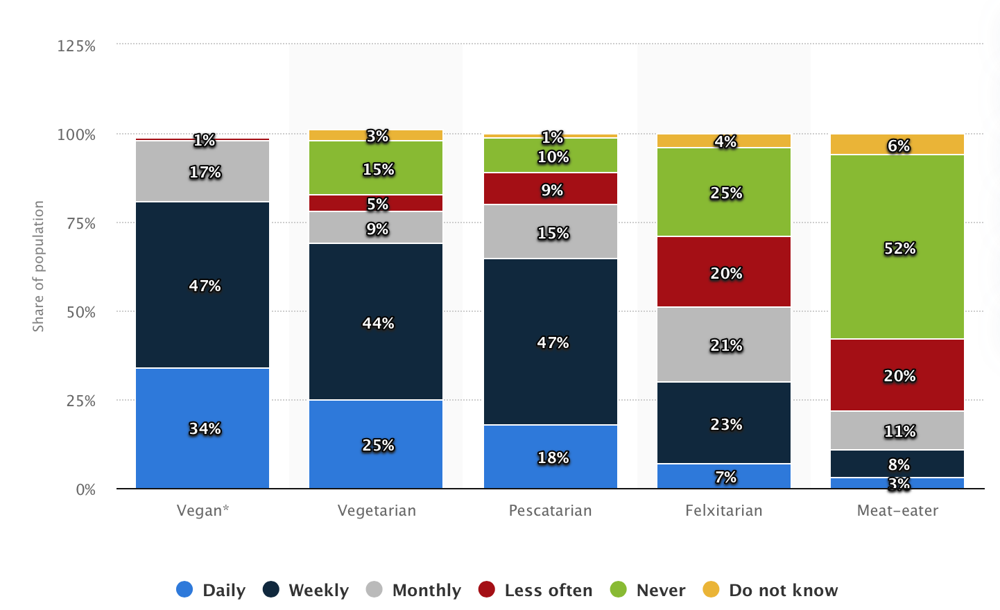

Mickael Marchese
data addict
data addict

Makeover monday no 23: Animal-free products consumption in UK
A 2019 survey by Nils-Gerrit Wunsch,
explores meat alternatives or dairy substitutes consumption habits in the uk. Respondents are classified in 5 diets: Meat-eaters, Flexitarians, Pescatarians, Vegetarians and Vegans.
For each diet, the following chart gives the proportion of people who consume animal-free products at different frequencies: daily, weekly, etc.

This bar chart has two flaws:
- in such bar charts, it is difficult to compare each segment of each bar. That's probably why figures are displayed in addition. But in that case, why bother create a bar chart?
- the survey gives percentages for each diet, but doesn't provide the proportion of vegans, vegetarians etc. amongst the UK population, which may be misleading.
The makeover
To solve the first issue, I suggest the use of an alluvial chart which is better at comparing proportions of each diet consume animal-free products at a given frequency.
I added a small improvement: by merging daily and weekly consumption in "regularly" and others in "not so regularly" we can have a quicker impression of the result.
That's why diets are represented in the middle. One can follow the graph to the left of a general overview, or to the right for a more detailed one.
That's why diets are represented in the middle. One can follow the graph to the left of a general overview, or to the right for a more detailed one.
To fix the 2nd issue, I searched for the number of vegans, vegetarians etc. in the UK.
The more complete study I found is this one : UK diet trends 2020.
It doesn't give the percentage of Flexitarians, so I'll just assume they're meat-eaters.
Considering this new input, the resulting chart looks like this. It's now clear that meat-eater are unexpectedly (or not!) the main customers for meat alternatives or dairy substitutes:
Thank you for reading.